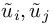
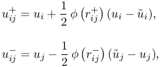
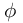
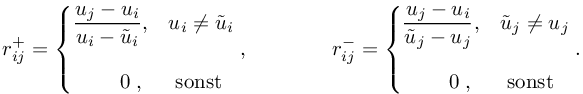
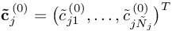
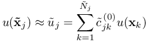
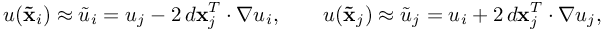
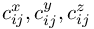

Simulate with complex geometries and complex physics
additionalPoint_approximation
(experimental) in EULERIMPL and EULEREXPL setting
Default: additionalPoint_approximation = 2
This is used in the EULERIMPL and EULEREXPL setting.
There are two options to approximate the unknown function values  of the MUSCL reconstructions (see pure_TRANSPORT)

whereby  is the slope LIMITER and

- additionalPoint_approximation = 1 -> function values are approximated by FPM stencil, i.e. :
On the hand this approach is very accurate, but it is very expensive and unsuitable for MPI parallelization because of the neighborhood extension. Therefore it is only for experimental purposes!
- additionalPoint_approximation = 2 -> function values are approximated by Taylor Expansions of second order:
whereby the gradients are approximated by using the FPM stencils for approximating x,y,z-derivative . ThusThis approach is very fast and only slightly less accurate than approach 1. Thus this is the method of choice!
![\nabla u_i &= \! \! \sum \limits_{\scriptstyle j \in S(i) \atop \scriptstyle j\neq i} \! \left(\begin{array}{*{1}{c}} c_{ij}^{x} \\[5pt]
c_{ij}^{y} \\[3pt]
c_{ij}^{z}
\end{array}\right) (u_j - u_i), \qquad \nabla u_j = \! \! \sum \limits_{\scriptstyle k \in S(j) \atop \scriptstyle k\neq j} \! \left(\begin{array}{*{1}{c}}
c_{jk}^{x} \\[5pt]
c_{jk}^{y} \\[3pt]
c_{jk}^{z}
\end{array}\right) (u_k - u_j).](553df338eba5b094a32f07ad99289f92.png)
| This item is referenced in: | |
|---|---|
| additionalPoint_approximation | (experimental) in EULERIMPL and EULEREXPL setting |
| pure_TRANSPORT | (experimental) choice of spatial discretization scheme for transport terms in EULERIMPL and EULEREXPL setting |
| SpecialBNDtreatmentEULERIMPL | (experimental) switch for special boundary treatment for MUSCL reconstruction in EULERIMPL scheme |
| EULERIMPL | Higher order implicit Eulerian or ALE motion (recommended among the Euler implementations) |